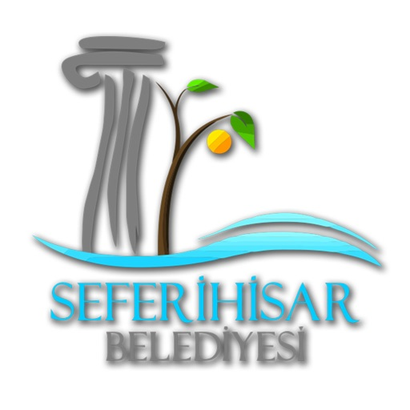

Seferihisar
Kurumsal
İletişim
Kurum Yönetmelikleri
Masal Evi Yönetmeliği
Pazar Yerleri Yönetmeliği
Sicil Yönetmeliği
Şehir Tiyatro Yönetmeliği
Sosyal Yardım Yönetmeliği
İlan ve Reklam Yönetmeliği
İmza Yetkileri Yönergesi
Seferihisar Gönüllüleri Yönergesi
Mahalle Gönüllüleri Katılım Yönergesi
Kadın Emeği Evleri Yönetmeliği
Temsil Tören veAğırlama Yönetmeliği
Disiplin Amirleri Yönetmeliği
Araç Kullanma Yönergesi
Basın Yayın ve Halkla İlişkiler Yönetmeliği
Destek Hizmetleri Yönetmeliği
İmar ve Şehircilik Müdürlüğü Yönetmeliği
Etüd Proje Yönetmeliği
Fen İşleri Md. Yönetmeliği
Kadın Danışma Merkezi Yönetmeliği
Mali Hizmetler Müdürlüğü Yönetmeliği
Ruhsat Denetim Müdürlüğü Yönetmeliği
Tarımsal Hiizmetler Müdürlüğü Yönetmeliği
Temizlik Hizmetleri Yönetmeliği
Yazı İşleri Müdürlüğü
Zabıta Yönetmeliği
Hukuk İşleri Müd. Yönetmeliği
İnsan Kaynakları Müd. Yönetmeliği
Kültür ve sosyal İşler Müd. Yönetmeliği
Park ve Bahçeler Müd. Yönetmeliği
Ulaşım Hizmetleri Müd. Yönetmeliği
Yapı ve Kontrol Müd. Yönetmeliği